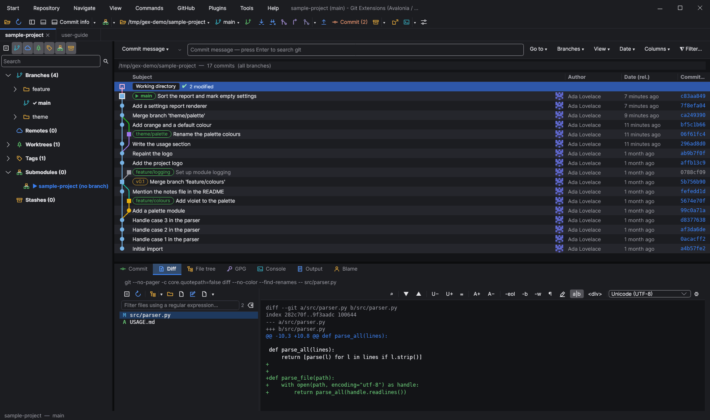
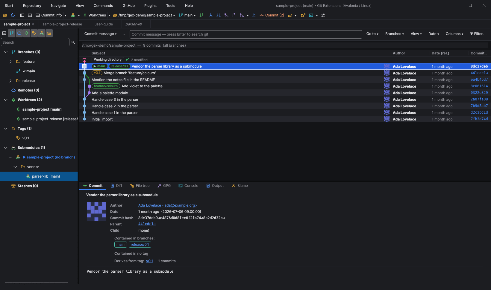
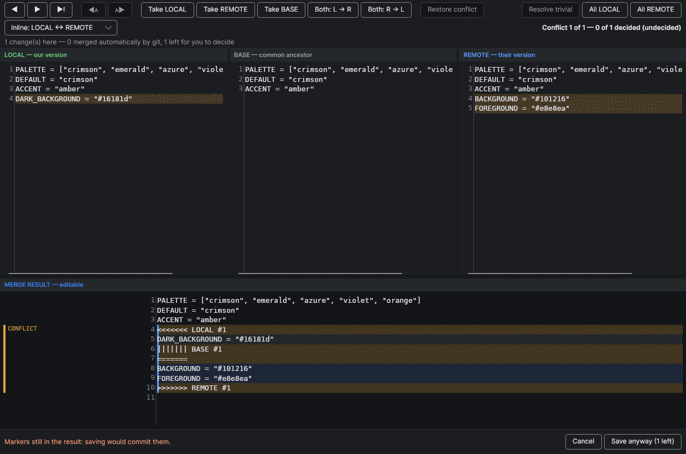
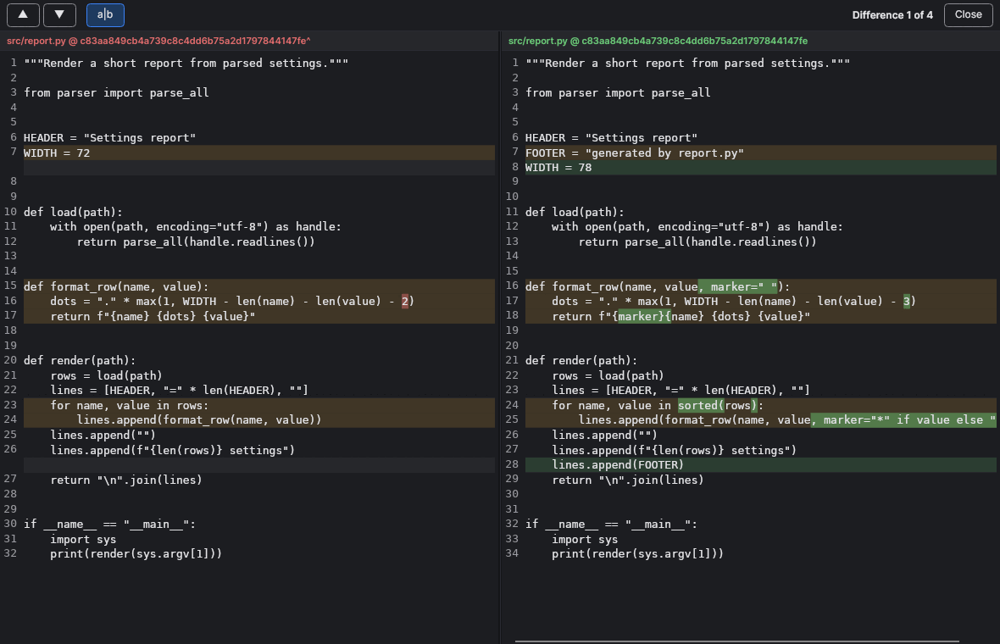
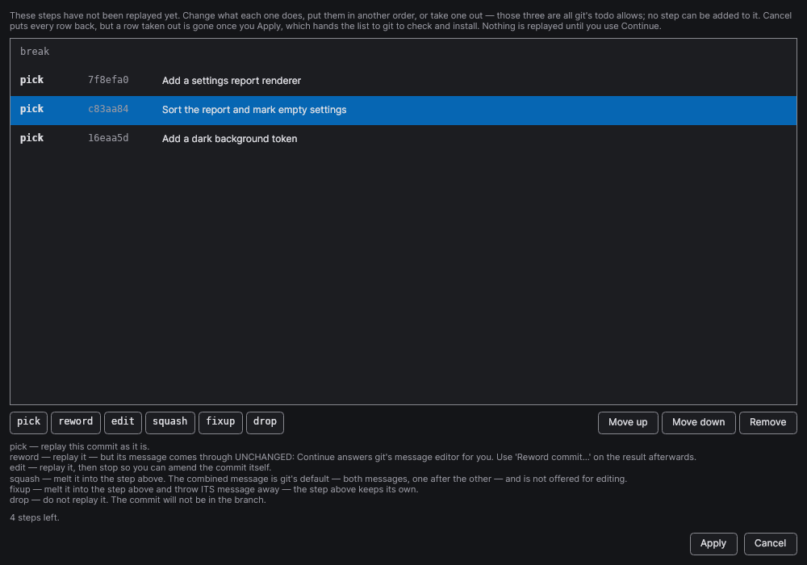
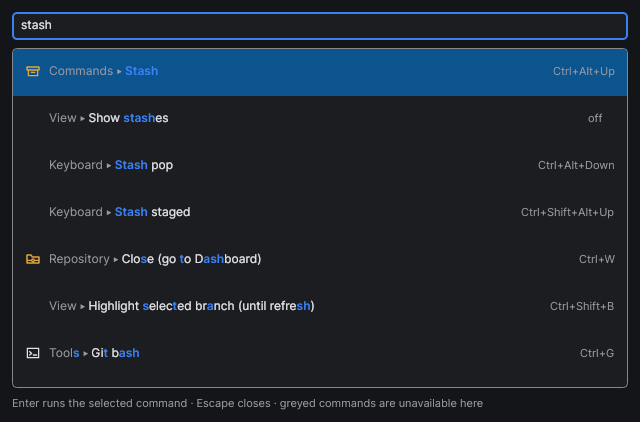
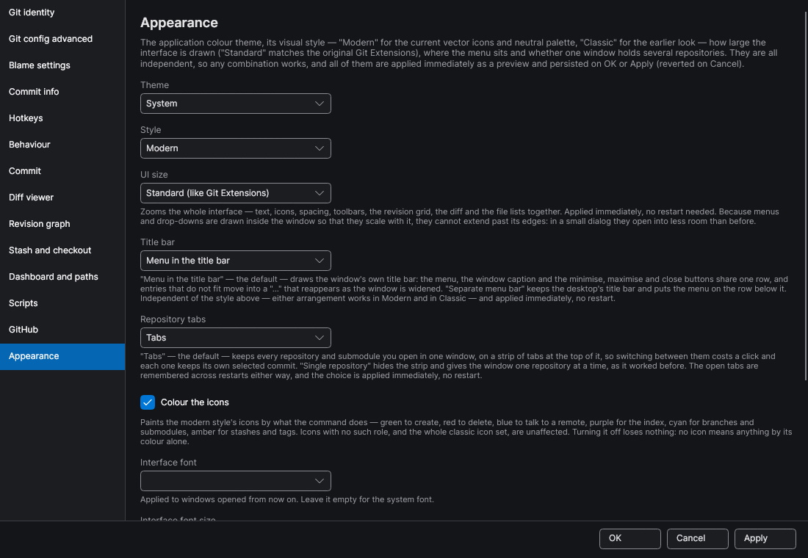

A graphical Git client for Linux
Brencho is the Linux port of Git Extensions: the same git logic, with a new native interface. Commit graph, several repositories in one window, built-in diff and three-way merge.

What it does
Everything Git Extensions users know (the revision grid, the commit dialog, the toolbar), rebuilt for the Linux desktop, plus a few things the original never had.

Several repositories in one window
A tab strip with previews and pinning. Submodules and worktrees open one click away.

Built-in three-way merge
Local, base and remote above, the editable result below. No external merge tool to configure.

Diff and image comparison
Unified or side-by-side diffs with per-character highlights, and an image diff for binary files.

Interactive rebase as steps
Reorder, squash and edit commits in a list, with a bar that shows where a stopped rebase, merge or cherry-pick is.

Command palette
Ctrl+Shift+P searches every command in the menu, with its shortcut.

Follows your desktop
Light, dark or system theme, live UI zoom, and an embedded terminal with nothing extra to install.
And also
The everyday Git operations, without leaving the window.
- Commit graph with branch, tag, remote and stash labels; hover a branch to highlight its history
- Commit dialog with staging by file, hunk or line, amend and fixup commits
- Apply or revert selected lines from any commit's diff; reset files to a chosen revision
- Branches, tags, remotes, stashes, submodules and worktrees in a side tree
- Fetch, pull, push, cherry-pick, revert, bisect, blame and file history
- Conflict resolution that says what kind of conflict it is, with rerere support
- Settings stored as plain files that survive a crash
- Translations from the Git Extensions catalogues
Install
The package bundles its own .NET runtime. The only thing it needs on your machine is git.
Ubuntu, Debian
Download brencho_5.0.0-linux1_amd64.deb from the latest release, then:
sudo apt install ./brencho_5.0.0-linux1_amd64.deb
brencho /path/to/a/git/repoArch Linux
Build the brencho-bin package from the PKGBUILD in the repository:
git clone https://github.com/daryda9/Brencho
cd Brencho/packaging/aur
makepkg -siFrom source
With the .NET 10 SDK, from the repository root:
dotnet build App/GitExtensions.Avalonia.csproj
./run.sh /path/to/a/git/repoQuestions
Is there a Git Extensions for Linux?
Yes, this is it. Git Extensions' interface is WinForms, which only runs on Windows. Brencho reuses Git Extensions' git logic unchanged and replaces the interface with a new Avalonia UI that runs natively on Linux. If you used Git Extensions on Windows, the layout will feel familiar.
Is it free?
Yes. Brencho is free and open source under the GPL v3, the same licence as Git Extensions. There is no paid tier, no account and no telemetry.
Do I need .NET installed?
No. The .deb ships its own .NET runtime in /opt/brencho. You only need git.
Which distributions and desktops does it run on?
Ubuntu and Debian through the .deb, Arch Linux through the PKGBUILD, on x86_64. It is tested on X11; on Wayland it runs through XWayland.
How does it compare with GitKraken, SmartGit or GitHub Desktop?
It covers the same daily work (graph, staging, diff, merge, rebase, multiple repositories) as a free, open-source desktop app, without accounts or a subscription. It works with any Git host, not only GitHub.
Why the name Brencho?
The Git trademark policy does not allow "Git" inside the name of another product, so the port needed a name of its own. It was called gitNext until November 2026.
What is missing compared with Git Extensions on Windows?
Plugins are limited to the built-in ones, and the Windows shell and Visual Studio integrations are not ported. The roadmap lists every known gap.